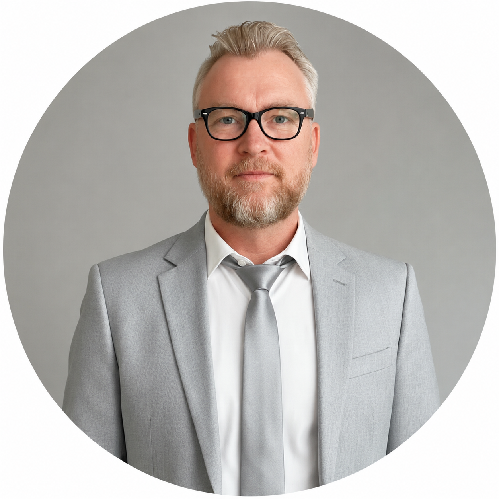

Perth, Western Australia

A decade-plus growth marketer and startup community builder — mentoring founders through Startup Weekend and Plus Eight, running digital marketing for Edith Cowan University, and shipping ventures on the side since 2005. Below is the full ledger.
AI computer vision judges your food photos against the strictest whole-foods standard on the internet.
wouldpieteat.com → ● buildingA browser-based F/A-18 carrier-ops flight simulator — catapult launches, dogfights, and night traps.
hornetbay.com → ● buildingEarly-stage build — details to follow.
propcheq.com →● gold = venture built ● teal = role held ○ grey = mentoring / facilitation
Founder
Three live builds — see Current Projects above for details on each.
Startup Mentor
Office Hours mentor specialising in digital marketing and growth for startups, alongside Curtin Venture.
Workshop Facilitator
Facilitated the City of Perth Plus Eight pre-accelerator Business Models workshop and an introduction to the Lean Canvas; ran office-hours mentoring for the cohort.
Digital Marketing Analyst
Own paid search and SEO for the university, oversee the international digital marketing effort, build forecasting models, and design and deliver digital marketing training for staff and partner agencies.
Founder
Rich-media banner advertising served on t-shirts with embedded digital displays. Killed once it was clear the concept lacked a real problem to solve.
Mentor
Mentoring founders through the 54-hour Lean Startup crucible — MVP scoping, market research, and marketing insight. Involved since the inaugural event in September 2012.
Co-Founder
"Kickstarter for indie designers," founded at the inaugural Startup Weekend Perth. 1,000+ visitors within hours of launch.
Co-Founder
Construction-industry project management platform. Ran Lean Canvas assumption testing before winding down.
Online Marketing Manager → Digital Strategist → Senior Digital Content Co-ordinator
Ran online marketing across a brand touching 25,000+ students and 1,800 staff — social, PPC, analytics, SEO, and organisational training. Chaired the Social Media Committee.
Freelance Digital Marketing Strategist
Built and implemented customised online marketing strategies for SMEs; approved trainer for the Small Business Development Corporation.
Founder
Retro video-game-inspired jewellery brand — first genuine viral hit, with media coverage across three countries.
Copywriter
Advertorial copywriter with the occasional restaurant review.
Director & Co-Founder
Commercial window installation firm. Grew revenue to $500k+ in under 18 months and the team from two to seven; sub-contracted on the Gorgon project.
Founder
First e-commerce build — digitised a mail-order operation using Mambo/Joomla and Php-Shop.
Corporate Actions Officer
Processed share splits, buy-backs, DRPs and bonus issues through a heated equities bull market; trained new team members on internal systems.
Founder & Vlogger
The first technical-analysis finance vlog on YouTube. Grew to ~100,000 views with zero paid promotion.
Product Development Manager
Designed an online multimedia course through a custom LMS; ran a daily video webcast and beta-tested financial-markets forecasting technology.
Corporate Actions Officer
Processing of corporate actions and disbursement of dividends across trust accounts.
Equities and Derivatives Trader
Traded ASX equities, CFDs, exchange-traded options and currency pairs. Built trend-following and income-writing strategies under strict risk management.
Copywriter
Copywriting and editing of commercial audio messages for domestic and international clients.